\(
\newcommand{\ord}[1]{\mathcal{O}\left(#1\right)}
\newcommand{\abs}[1]{\lvert #1 \rvert}
\newcommand{\floor}[1]{\lfloor #1 \rfloor}
\newcommand{\ceil}[1]{\lceil #1 \rceil}
\newcommand{\opord}{\operatorname{\mathcal{O}}}
\newcommand{\argmax}{\operatorname{arg\,max}}
\newcommand{\str}[1]{\texttt{"#1"}}
\)
簡單檔案讀寫
有的時候題目會要求你從某個檔案讀資料
再把你計算後的結果存在某個檔案
給你兩個數$a,\; b$，輸出$a*b$ 輸入有多行，每行會有兩個整數$a,\; b$。
你要對每筆輸入，輸出其$a*b$的值並換行。
千萬記得不管怎樣都不要用
超級慢！！
改良一下，讓陣列的第一個元素保持最大
以下以 $k = 2$ 為例，每一組權重最大的放前面
我們設$k=\sqrt{n}$
這樣top和pop的複雜度就變成$\ord{\sqrt{n}}$了
當大約$n \leq 4*10^5$的時候不會TLE，但可以做得更好
將元素放進Tree $\ord{1}$
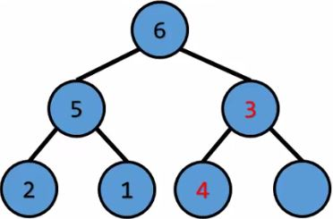
將元素放進Tree $\ord{1}$
和父節點比較 $\ord{1}$
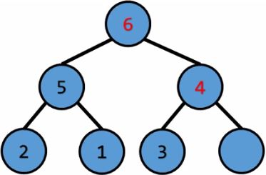
將元素放進Tree $\ord{1}$
和父節點比較 $\ord{1}*\ord{\log{n}}$
一直往上浮，直到權重不大於父節點，最多比較$\ord{\log{n}}$次
$\ord{1}$解決
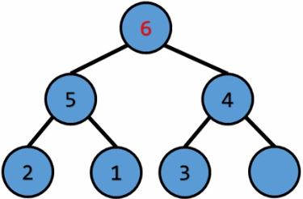

根節點的權重最大，pop掉 $\ord{1}$
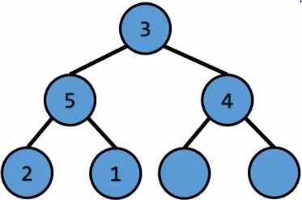
根節點的權重最大，pop掉 $\ord{1}$
將最後一個元素放到根節點 $\ord{1}$
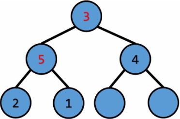
根節點的權重最大，pop掉 $\ord{1}$
將最後一個元素放到根節點 $\ord{1}$
和兩個子節點中權重最大的那個比較 $\ord{1}$
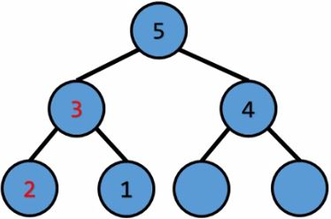
根節點的權重最大，pop掉 $\ord{1}$
將最後一個元素放到根節點 $\ord{1}$
和兩個子節點中權重最大的那個比較 $\ord{1}*\ord{\log{n}}$
一直下沉直到權重不小於兩個子節點，最多比較 $\ord{\log{n}}$次
簡單檔案讀寫
&
heap
簡單檔案讀寫
再把你計算後的結果存在某個檔案
像這樣
乘法問題
Multiplication problem給你兩個數$a,\; b$，輸出$a*b$ 輸入有多行，每行會有兩個整數$a,\; b$。
你要對每筆輸入，輸出其$a*b$的值並換行。
請從
把結果輸出到
test.in讀取資料把結果輸出到
test.out
這種題目在比賽中常常遇到喔，所以至少要會簡單讀檔！
C的簡易讀寫檔
參數說明
freopen(檔案名稱,讀或寫,當作哪個資料流);-
檔案名稱：
就是你要讀取檔案的位置+名稱，可以是相對路徑或絕對路徑
例如"D:\\Example\\test.in"或是"test.in" -
讀或寫：
"r"表示讀(read)，"w"表示寫(write) -
當作哪個資料流：
你可以把你的讀寫檔操作當成某個資料流，例如:
freopen("a.in","r",stdin)
就是從a.in讀取檔案，用stdin來操作
所以你可以直接使用scanf之類的東東
C++的簡易讀寫檔
使用說明
- 首先你要
#include<fstream> -
之後定義一個fstream型別:
fstream f; -
設定他是要讀檔還是寫檔:
f.open("test.in",ios::in);讀檔
f.open("test.out",ios::out);寫檔 - 像使用cin,cout一樣去使用它吧(請看範例)
- 養成良好習慣，使用完記得
close
endl超級慢！！
heap
課程內容
- priority queue
- 直接用陣列做 $\ord{n}$
- 分組 $\ord{\sqrt{n}}$
- heap $\ord{\log{n}}$
priority queue
-
複習一下之前講過的資料結構:
- stack: first in last out
- queue: first in first out
-
如果現在想要pop的不是最先進去的，也不是最後進去的，而是權重最大(小)的呢?
- priority queue
- 以下為了方便講解，元素都是數字，權重即是數字的大小，例如3的權重比2大
基本操作
- push:將一個元素放入priority queue中
- pop:將priority queue中權重最大的元素拿掉
- top:詢問priority queue中權重最大的元素
最直接的做法
- 用陣列實作
-
push:
放在陣列尾端就好了 $\ord{1}$ -
top:
掃描陣列所有的元素找最大的 $\ord{n}$ -
pop:
找到最大值 $\ord{n}$
之後把它用最後一個元素取代掉 $\ord{1}$
總複雜度還是$\ord{n}$
TLE
top和pop太慢了最直接的做法-改良版
-
push:
先放在陣列尾端，然後如果比陣列第一個元素還大的話就和陣列第一個元素交換位置 $\ord{1}$ -
top:
就陣列第一個元素啊 $\ord{1}$ -
pop:
找到最大值 $\ord{1}$
把它用其他元素的最大值取代掉 $\ord{n}$
總複雜度還是$\ord{n}$
TLE
pop太慢了分組作法
精神
將k個元素分成一組，並紀錄每組中最大的元素以下以 $k = 2$ 為例，每一組權重最大的放前面
-
push:
5 4 6 3 1 $\Longleftarrow$插入 2
5 4 6 3 1 2 $\Longleftarrow 2 > 1(最大值)$，交換位置
5 4 6 3 2 1
- 放進陣列尾端$\ord{1}$
- 和同組的最大值比較$\ord{1}$
- 整體來看$\ord{1}$
- top:找每組中最大的出來比較就好了 $\ord{n/k}$
-
pop:
5 4 6 3 2 1 $\Longleftarrow$找到最大值，pop掉
5 4 X 3 2 1 $\Longleftarrow$最後一個元素補上
5 4 1 3 2 $\Longleftarrow$找出最大元素放在前面
5 4 3 1 2
-
pop:
- 找到最大值，pop掉 $\ord{n/k}$
- 最後一個元素補上 $\ord{1}$
- 找出最大元素放在前面 $\ord{k}$
- 總複雜度 $\ord{n/k}+\ord{k}$，視$k$的大小而定
這樣top和pop的複雜度就變成$\ord{\sqrt{n}}$了
complete binary tree
特性：深度為$\ord{\log{n}}$。各層節點全滿，除了最後一層，最後一層節點全部靠左。

設根節點編號為1。假設現在有一個節點編號是$i$，那他的父節點編號是$\floor{i/2}$，左子節點編號是$i*2$，右子節點編號是$i*2+1$
因為這個特性，我們可以利用陣列儲存complete binary tree。
設根節點編號為1。假設現在有一個節點編號是$i$，那他的父節點編號是$\floor{i/2}$，左子節點編號是$i*2$，右子節點編號是$i*2+1$
因為這個特性，我們可以利用陣列儲存complete binary tree。
heap
- 這次的主角
- heap其實是一顆complete binary tree
- 性質：父節點的權重不小於子節點的權重
push
push
將元素加入priority queuepush
push
將元素放進Tree將元素放進Tree $\ord{1}$
push
push
和父節點比較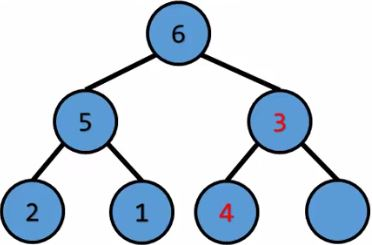
將元素放進Tree $\ord{1}$
和父節點比較 $\ord{1}$
push
push
一直和父節點比較，往上浮，直到權重不大於父節點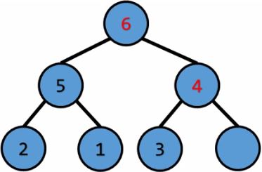
將元素放進Tree $\ord{1}$
和父節點比較 $\ord{1}*\ord{\log{n}}$
一直往上浮，直到權重不大於父節點，最多比較$\ord{\log{n}}$次
top
根節點元素一定是最大的啊！$\ord{1}$解決
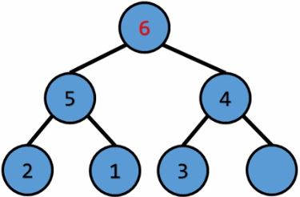
pop
pop
拿掉權重最大的元素pop
pop
拿掉權重最大的元素根節點的權重最大，pop掉 $\ord{1}$
pop
pop
將最後一個元素放到根節點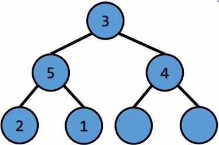
根節點的權重最大，pop掉 $\ord{1}$
將最後一個元素放到根節點 $\ord{1}$
pop
pop
和兩個子節點中權重最大的那個比較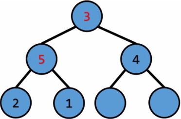
根節點的權重最大，pop掉 $\ord{1}$
將最後一個元素放到根節點 $\ord{1}$
和兩個子節點中權重最大的那個比較 $\ord{1}$
pop
pop
一直下沉直到權重不小於兩個子節點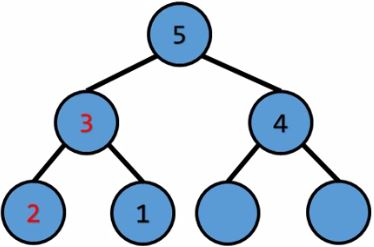
根節點的權重最大，pop掉 $\ord{1}$
將最後一個元素放到根節點 $\ord{1}$
和兩個子節點中權重最大的那個比較 $\ord{1}*\ord{\log{n}}$
一直下沉直到權重不小於兩個子節點，最多比較 $\ord{\log{n}}$次
操作複雜度
- push:$\ord{\log{n}}$
- top:$\ord{1}$
- pop:$\ord{\log{n}}$